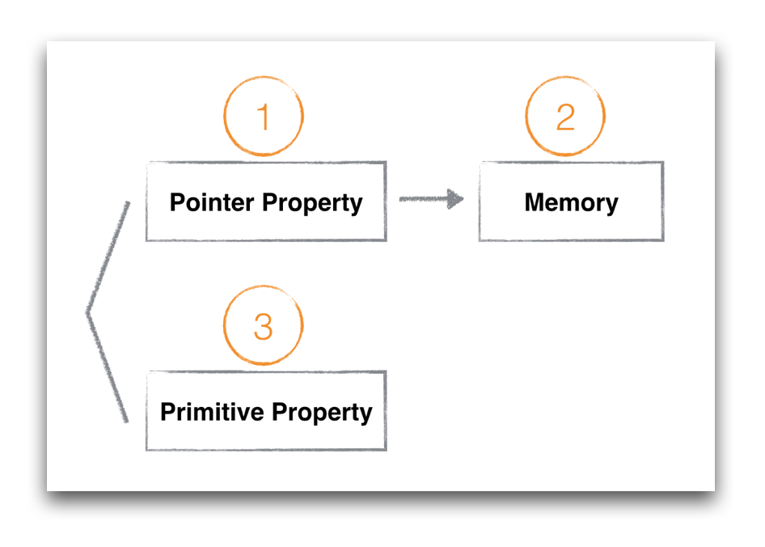

iOS为什么需要注意多线程安全
前言
关于iOS多线程是一个比较炙热的问题的话题。但是在无数了解以及尝试多线程的背后，我觉得还有更重要的一个话题需要被重视，那就是多线程安全。什么叫做不安全，为什么不安全？是一个值得深究的东西。关于多线程的东西以前写过：ios多线程之NSThread,GCD,NSOperation以及线程同步。
一般来说，绝大多数的多线程都是来处理逻辑，计算最终转化为数据。共享状态，多线程共同访问某个对象的property，在iOS编程里是很普遍的使用场景，我们就从Property的多线程安全说起。
Property
当我们讨论property多线程安全的时候，很多人都知道给property加上atomic attribute之后，可以一定程度的保障多线程安全，类似：
1 | @property (atomic, strong) NSString* name; |
如果你认为这样就一定可以做到多线程安全的话，那你就错了。事实上，情况复杂很多。下面我们来看一下。
如果我们要分析property在多线程场景下的不同表现，首先我们就需要把property的类型做一个区分。
首先，我们把类型区分为大体的两类：值类型、对象。就想我们制定property的attribute一样。值类型一般用assgin修饰，即：int, long, bool等非对象类型。对象类型声明为指针，可以指向某个符合类型定义的内存区域（非值类型的其他类型）。
上面提到的name就是个对象类型，当我们访问name的时候，访问的有可能是name本身，也有可能是name所指向的内存区域。所以这又有一个小的分类。
类型：
- 值类型
- 对象类型（本身）
- 对象类型（只想的内存区域）

比如：
1 | self.name = @"birdmichael"; |
是在对指针本身进行赋值。而
1 | [self.userName rangeOfString:@"michael"]; |
是在访问指针指向的字符串所在的内存区域，这二者并不一样。
分完类之后，我们需要明白这三类property的内存模型。
Memory Layout
当我们讨论多线程安全的时候，其实是在讨论多个线程同时访问一个内存区域的安全问题。针对同一块区域，我们有两种操作，读（load）和写（store），读和写同时发生在同一块区域的时候，就有可能出现多线程不安全。所以展开讨论之前，先要明白上述三种property的内存模型，首先要明白下面的常识：
以64位系统为例，指针NSString*是8个字节的内存区域，int count是个4字节的区域，而@“birdmicahel”是一块根据字符串长度而定的内存区域。
当我们访问property的时候，实际上是访问上图中三块内存区域。
1 | self.name = @"birdmicahel"; |
是修改第一块区域。
1 | self.count = 10; |
是在修改第二块区域。
1 | [self.name rangeOfString:@"michael"]; |
是在读取第三块区域。
不安全的定义
明白了property的类型以及他们对应的内存模型，我们再来看看不安全的定义。Wikipedia如是说：
A piece of code is thread-safe if it manipulates shared data structures only in a manner that guarantees safe execution by multiple threads at the same time
这段定义看起来还是有点抽象，我们可以将多线程不安全解释为：多线程访问时出现意料之外的结果。这个意料之外的结果包含几种场景，不一定是指crash，后面再一一分析。
先来看下多线程是如何同时访问内存的。不考虑CPU cache对变量的缓存，内存访问情况：
我们只有一个地址总线，一个内存。即使是在多线程的环境下，也不可能存在两个线程同时访问同一块内存区域的场景，内存的访问一定是通过一个地址总线串行排队访问的，所以在继续后续之前，我们先要明确几个结论：
结论一：内存的访问时串行的，并不会导致内存数据的错乱或者应用的crash。
结论二：如果读写（load or store）的内存长度小于等于地址总线的长度，那么读写的操作是原子的，一次完成。比如bool，int，long在64位系统下的单次读写都是原子操作。
接下来我们根据上面三种property的分类逐一看下多线程的不安全场景。
值类型Property
先以BOOL值类型为例，当我们有两个线程访问如下property的时候：
1 | @property (nonatomic, assgin) BOOL isDeleted; |
线程1和线程2，一个读(load)，一个写(store)，对于BOOL isDeleted的访问可能有先后之分，但一定是串行排队的。而且由于BOOL大小只有1个字节，64位系统的地址总线对于读写指令可以支持8个字节的长度，所以对于BOOL的读和写操作我们可以认为是原子的，所以当我们声明BOOL类型的property的时候，从原子性的角度看，使用atomic和nonatomic并没有实际上的区别（当然如果重载了getter方法就另当别论了）。
如果是int类型呢？
1 | @property (nonatomic, assgin) int count; |
同理int类型长度为4字节，读和写都可以通过一个指令完成，所以理论上读和写操作都是原子的。从访问内存的角度看nonatomic和atomic也并没有什么区别。
atomic到底有什么用呢？据我所知，用处有二：
用处一： 生成原子操作的getter和setter。
设置atomic之后，默认生成的getter和setter方法执行是原子的。也就是说，当我们在线程1执行getter方法的时候（创建调用栈，返回地址，出栈），线程B如果想执行setter方法，必须先等getter方法完成才能执行。举个例子，在32位系统里，如果通过getter返回64位的double，地址总线宽度为32位，从内存当中读取double的时候无法通过原子操作完成，如果不通过atomic加锁，有可能会在读取的中途在其他线程发生setter操作，从而出现异常值。如果出现这种异常值，就发生了多线程不安全。
用处二：设置Memory Barrier
对于Objective C的实现来说，几乎所有的加锁操作最后都会设置memory barrier，atomic本质上是对getter，setter加了锁，所以也会设置memory barrier。官方文档表述如下：
Note: Most types of locks also incorporate a memory barrier to ensure that any preceding load and store instructions are completed before entering the critical section.
memory barrier有什么用处呢？
memory barrier能够保证内存操作的顺序，按照我们代码的书写顺序来。听起来有点不可思议，事实是编译器会对我们的代码做优化，在它认为合理的场景改变我们代码最终翻译成的机器指令顺序。也就是说如下代码：
1 | self.intA = 0; //line 1 |
编译器可能在一些场景下先执行line2，再执行line1，因为它认为A和B之间并不存在依赖关系，虽然在代码执行的时候，在另一个线程intA和intB存在某种依赖，必须要求line1先于line2执行。
如果设置property为atomic，也就是设置了memory barrier之后，就能够保证line1的执行一定是先于line2的，当然这种场景非常罕见，一则是出现变量跨线程访问依赖，二是遇上编译器的优化，两个条件缺一不可。这种极端的场景下，atomic确实可以让我们的代码更加多线程安全一点，但我写iOS代码至今，还未遇到过这种场景，较大的可能性是编译器已经足够聪明，在我们需要的地方设置memory barrier了。
是不是使用了atomic就一定多线程安全呢？我们可以看看如下代码：
1 | @property (atomic, assign) int intA; |
即使我将intA声明为atomic，最后的结果也不一定会是20000。原因就是因为self.intA = self.intA + 1;不是原子操作，虽然intA的getter和setter是原子操作，但当我们使用intA的时候，整个语句并不是原子的，这行赋值的代码至少包含读取(load)，+1(add)，赋值(store)三步操作，当前线程store的时候可能其他线程已经执行了若干次store了，导致最后的值小于预期值。这种场景我们也可以称之为多线程不安全。
指针Property
指针Property一般指向一个对象，比如：
1 | @property (atomic, strong) NSString* name; |
无论iOS系统是32位系统还是64位，一个指针的值都能通过一个指令完成load或者store。但和primitive type不同的是，对象类型还有内存管理的相关操作。在MRC时代，系统默认生成的setter类似如下：
1 | - (void)setName:(NSString *)name { |
不仅仅是赋值操作，还会有retain，release调用。如果property为nonatomic，上述的setter方法就不是原子操作，我们可以假设一种场景，线程1先通过getter获取当前_name，之后线程2通过setter调用[_name release];，线程1所持有的_name就变成无效的地址空间了，如果再给这个地址空间发消息就会导致crash，出现多线程不安全的场景。
到了ARC时代，Xcode已经替我们处理了retain和release，绝大部分时候我们都不需要去关心内存的管理，但retain，release其实还是存在于最后运行的代码当中，atomic和nonatomic对于对象类的property声明理论上还是存在差异，不过我在实际使用当中，将NSString*设置为nonatomic也从未遇到过上述多线程不安全的场景，极有可能ARC在内存管理上的优化已经将上述场景处理过了，所以我个人觉得，如果只是对对象类property做read，write，atomic和nonatomic在多线程安全上并没有实际差别。
指针Property指向的内存区域
这一类多线程的访问场景是我们很容易出错的地方，即使我们声明property为atomic，依然会出错。因为我们访问的不是property的指针区域，而是property所指向的内存区域。可以看如下代码：
1 | @property (atomic, strong) NSString* stringA; |
虽然stringA是atomic的property，而且在取substring的时候做了length判断，线程B还是很容易crash，因为在前一刻读length的时候self.stringA = @"a very long string";，下一刻取substring的时候线程A已经将self.stringA = @"string";，立即出现out of bounds的Exception，crash，多线程不安全。
同样的场景还存在对集合类操作的时候，比如：
1 | @property (atomic, strong) NSArray* arr; |
同理，即使我们在访问objectAtIndex之前做了count的判断，线程B依旧很容易crash，原因也是由于前后两行代码之间arr所指向的内存区域被其他线程修改了。
所以你看，真正需要操心的是这一类内存区域的访问，即使声明为atomic也没有用，我们平常App出现莫名其妙难以重现的多线程crash多是属于这一类，一旦在多线程的场景下访问这类内存区域的时候，要提起十二分的小心。如何避免这类crash后面会谈到。
Property多线程安全小结：
简而言之，atomic的作用只是给getter和setter加了个锁，atomic只能保证代码进入getter或者setter函数内部时是安全的，一旦出了getter和setter，多线程安全只能靠程序员自己保障了。所以atomic属性和使用property的多线程安全并没什么直接的联系。另外，atomic由于加锁也会带来一些性能损耗，所以我们在编写iOS代码的时候，一般声明property为nonatomic，在需要做多线程安全的场景，自己去额外加锁做同步。
如何做到多线程安全？
讨论到这里，其实怎么做到多线程安全也比较明朗了，关键字是atomicity（原子性），只要做到原子性，小到一个primitive type变量的访问，大到一长段代码逻辑的执行，原子性能保证代码串行的执行，能保证代码执行到一半的时候，不会有另一个线程介入。
原子性是个相对的概念，它所针对的对象，粒度可大可小。
比如下段代码：
1 | if (self.stringA.length >= 10) { |
是非原子性的。
但加锁以后：
1 | //thread A |
整段代码就具有原子性了，就可以认为是多线程安全了。
再比如：
1 | if (self.arr.count >= 2) { |
是非原子性的。
而
1 | //thread A |
是具有原子性的。注意，读和写都需要加锁。
这也是为什么我们在做多线程安全的时候，并不是通过给property加atomic关键字来保障安全，而是将property声明为nonatomic（nonatomic没有getter，setter的锁开销），然后自己加锁。
如何使用哪种锁？
iOS给代码加锁的方式有很多种，常用的有：
- @synchronized(token)
- NSLock
- dispatch_semaphore_t
- OSSpinLock
这几种锁都可以带来原子性，性能的损耗从上至下依次更小。
我个人建议是，在编写应用层代码的时候，除了OSSpinLock之外，哪个顺手用哪个。相较于这几个锁的性能差异，代码逻辑的正确性更为重要。而且这几者之间的性能差异对用户来说，绝大部分时候都感知不到。
当然我们也会遇到少数场景需要追求代码的性能，比如编写framework，或者在多线程读写共享数据频繁的场景，我们需要大致了解锁带来的损耗到底有多少。
官方文档有个数据，使用Intel-based iMac with a 2 GHz Core Duo processor and 1 GB of RAM running OS X v10.5测试，获取mutex有大概0.2ms的损耗，我们可以认为锁带来的损耗大致在ms级别。
尽量避免多线程的设计
无论我们写过多少代码，都必须要承认多线程安全是个复杂的问题，作为程序员我们应该尽可能的避免多线程的设计，而不是去追求高明的使用锁的技能。
后面我会写一篇文章，介绍函数式编程及其核心思想，即使我们使用非函数式的编程语言，比如Objective C，也能极大的帮助我们避免多线程安全的问题。
@synchronized()
@synchronized是几种iOS多线程同步机制中最慢的一个，同时也是最方便的一个。
苹果建立@synchronized的初衷就是方便开发者快速的实现代码同步，语法如下：
1 | @synchronized(obj) { |
为了加深理解，我们刨一刨代码看看@synchronized到底做了什么事。我在一个测试工程的main.m中写了一段代码：
1 | void testSync() |
在源码中一搜，很快就发现了这两个函数：
1 | // Begin synchronizing on 'obj'. |
从上述源码中，我们至少可以确立两个信息：
- synchronized是使用的递归mutex来做同步。
- @synchronized(nil)不起任何作用
递归mutex的意思是，我们可以写如下代码：
1 | @synchronized (obj) { |
而不会导致死锁。我顺道扒了下java当中的synchronized关键字，发现也是使用的递归锁，看来这是个common trick。recursive mutex其实里面还是使用了pthread_mutex_t，只不过多了一层ownership的判断，性能上比非递归锁要稍微慢一些。
@synchronized(nil)不起任何作用，表明我们需要适当关注传入的object的声明周期，一旦置为nil之后就无法做代码同步了。
我们再看看传入的obj参数有什么作用。
继续看代码发现传入的obj被用作参数来获取SyncData对象，里面有一大段关于SyncData的cache逻辑，有兴趣的同学可以自己看下代码，这是一个两层的cache设计，第一层是tls cache，第二层是自己维护的一个hash map。这里将流程简化，来看下obj是如何在hash map中缓存的。
先看下SyncData获取的方式：
1 | SyncData **listp = &LIST_FOR_OBJ(object); |
而LIST_FOR_OBJ又指向：
1 | #define LIST_FOR_OBJ(obj) sDataLists[obj].data |
再看下StripedMap的实现就很清楚了：
1 | static unsigned int indexForPointer(const void *p) { |
indexForPointer中使用了obj的内存地址，做了个简单的map，映射到另一个内存空间来存放SyncList。
通过上述分析，我们可以得出结论了：
synchronized中传入的object的内存地址，被用作key，通过hash map对应的一个系统维护的递归锁。
以上就是object的用处，所以不管是传入什么类型的object，只要是有内存地址，就能启动同步代码块的效果。
消化完synchronized的内部实现，我们再来看看平常使用中常见的一些坑。
慎用@synchronized(self)
我其实更想说：不要使用@synchronized(self)。
我看过不少代码都是直接将self传入@synchronized当中，这是种很粗糙的使用方式，容易导致死锁的出现。比如：
1 | //class A |
原因是因为self很可能会被外部对象访问，被用作key来生成一锁，类似上述代码中的@synchronized (objectA)。两个公共锁交替使用的场景就容易出现死锁。
所以正确的做法是传入一个类内部维护的NSObject对象，而且这个对象是对外不可见的。
精准的粒度控制
有些人说@synchronized慢，但@synchronized和其他同步锁的性能相比并没有很夸张，对于使用者来说几乎忽略不计。
之所以慢是更多的因为没有做好粒度控制。锁本质上是为了让我们的一段代码获得原子性，不同的critical section要使用不同的锁。我见过很多类似的写法：
1 | @synchronized (sharedToken) { |
使用同一个token来同步arrA和arrB的访问，虽然arrA和arrB之间没有任何联系。传入self的就更不对了。
应该是不同的数据使用不同的锁，尽量将粒度控制在最细的程度。上述代码应该是：
1 | @synchronized (tokenA) { |
注意内部的函数调用
@synchronized还有个很容易变慢的场景，就是{}内部有其他隐蔽的函数调用。比如：
1 | @synchronized (tokenA) { |
doSomethingWithA内部可能又调用了其他函数，维护doSomethingWithA的工程师可能并没有意识到自己是被锁同步的，由此层层叠叠可能引入更多的函数调用，代码就莫名其妙的越来越慢了，感觉锁的性能差，其实是我们没用好。
所以在书写@synchronized内部代码的时候，要十分小心内部隐蔽的函数调用。
pthread_mutex
另外再介绍一个个人也觉得超级好用的互斥锁。pthread_mutex只需要初始化一个 pthread_mutex_t 用 pthread_mutex_lock 来锁定 pthread_mutex_unlock 来解锁，当使用完成后，记得调用 pthread_mutex_destroy 来销毁锁。
在配上宏，代码超级美观。
1 | #define Lock() pthread_mutex_lock(&_lock) |